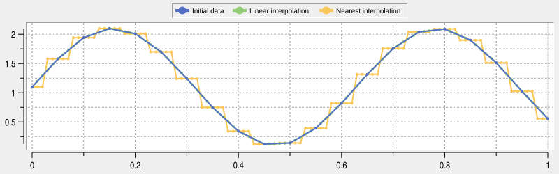
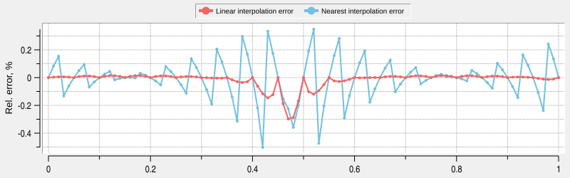

Examples
This section contains examples of usage of interpolation/approximation procedures of the package. List of availible examples:
1D Linear and nearest interpolation - “examples/linear_near_interpolation.tcl” file
1D Linear and nearest interpolation wtih RBC - “examples/linear_near_interpolation_rbc.tcl” file
1D Linear and nearest interpolation
The two most basic types of interpolation are linear and nearest ones. These types are availible with procedures ::tclinterp::interpolation::lin1d and ::tclinterp::interpolation::near1d. To demonstrate both type we use shifted sinusoidal function:
Relative error is calculated here and in all subsequent chapters is defined as:
Import all procedures from ::tclinterp namespace:
package require tclinterp
package require ticklecharts
namespace import ::tclinterp::*
namespace import ::tclinterp::interpolation::*
namespace import ::tclinterp::approximation::*
Define procedures for sinusoidal function calculation, error calculation and for generating sequence of x values:
proc sinFunc {x} {
return [expr {sin($x*10)+1.1}]
}
proc relError {ref act} {
return [expr {($ref-$act)*100/$ref}]
}
proc genSeq {xmin xmax step func} {
for {set i 0} {$i<=[expr {($xmax-$xmin)/$step}]} {incr i} {
set xval [expr {$xmin+$i*$step}]
lappend x $xval
lappend y [$func $xval]
}
return [list $x $y]
}
Create input data, interpolation points xi and exact values at these points:
set xmin 0
set xmax 1
set step 0.05
set stepInterp 0.01
lassign [genSeq $xmin $xmax $step sinFunc] x y
lassign [genSeq $xmin $xmax $stepInterp sinFunc] xInterp yExact
Input data has points with 0.05 step, xi values are separated by 0.01 step.
Zip input data for ticklecharts plotting:
set xydata [lmap xi $x yi $y {list $xi $yi}]
Call interpolation function ::tclinterp::interpolation::lin1d that returns list of interpolated y values, and
zip xi and yInterpLin points:
set yInterpLin [lin1d -x $x -y $y -xi $xInterp]
set xydataInterpLin [lmap xi $xInterp yi $yInterpLin {list $xi $yi}]
Do the same for ::tclinterp::interpolation::near1d:
set yInterpNear [near1d -x $x -y $y -xi $xInterp]
set xydataInterpNear [lmap xi $xInterp yi $yInterpNear {list $xi $yi}]
Zip exact values:
set xydataExact [lmap xi $xInterp yi $yExact {list $xi $yi}]
Calculate errors:
set interpErrorLin [lmap xi $xInterp yiExact $yExact yiInterpLin $yInterpLin\
{list $xi [relError $yiExact $yiInterpLin]}]
set interpErrorNear [lmap xi $xInterp yiExact $yExact yiInterpNear $yInterpNear\
{list $xi [relError $yiExact $yiInterpNear]}]
Plot and save results using ticklecharts:
set chart [ticklecharts::chart new]
$chart Xaxis -name x -minorTick {show True} -min 0 -max 1 -type value -splitLine {show True}
$chart Yaxis -name y -minorTick {show True} -min 0 -max 2.5 -type value -splitLine {show True}
$chart SetOptions -title {} -legend {top 0% left 20%} -tooltip {trigger axis} -animation False\
-toolbox {feature {dataZoom {yAxisIndex none}}}
$chart Add lineSeries -data $xydata -showAllSymbol nothing -name {Initial data}
$chart Add lineSeries -data $xydataInterpLin -showAllSymbol nothing -name {Linear interpolation}
$chart Add lineSeries -data $xydataInterpNear -showAllSymbol nothing -name {Nearest interpolation}
$chart Add lineSeries -data $xydataExact -showAllSymbol nothing -name {Exact data}
set chartError [ticklecharts::chart new]
$chartError Xaxis -name x -minorTick {show True} -min 0 -max 1 -type value -splitLine {show True}
$chartError Yaxis -name {Rel. error, %} -minorTick {show True} -type value -splitLine {show True}
$chartError SetOptions -title {} -legend {top 50% left 30%} -tooltip {} -animation False\
-toolbox {feature {dataZoom {yAxisIndex none}}}
$chartError Add lineSeries -data $interpErrorLin -showAllSymbol nothing -name {Linear interpolation error}
$chartError Add lineSeries -data $interpErrorNear -showAllSymbol nothing -name {Nearest interpolation error}
# create multiplot
set layout [ticklecharts::Gridlayout new]
$layout Add $chart -bottom 55% -height 40% -width 80%
$layout Add $chartError -bottom 5% -height 40% -width 80%
# save to file
set fbasename [file rootname [file tail [info script]]]
set chartDir [file normalize [file join [file dirname [info script]] .. docs assets charts]]
file mkdir $chartDir
$layout Render -outfile [file join $chartDir $fbasename.html] -width 800px -height 500px\
-divid $fbasename -jschartvar chart_$fbasename -jsvar option_$fbasename
Results are:
1D Linear and nearest interpolation wtih RBC
This example achieves exactly the same goal as previous one, but instead of Tcl lists, it uses
RBC vectors for input and output of
interpolation procedure, and
RBC graphtoolbar widget for plotting
results. To be able to use this interface, tclinterp package must be compiled with option
--with-rbc=/path/to/rbcheaders.
As a first step we import necessary packages, and the main difference from the previous example is presence
of package require rbc::graphtoolbar command. This command loads graphtoolbar package within RBC,
and graphtoolbar package itself loads main rbc library. After that, we import
commands rbc::vector and rbc::graphtoolbar to current namespace:
package require tclinterp
package require rbc::graphtoolbar
package require ticklecharts
namespace import rbc::vector
namespace import rbc::graphtoolbar
namespace import ::tclinterp::*
namespace import ::tclinterp::interpolation::*
For data generation the same limits and step sizes are used, but now the x values are generated with VECINST
seq command, and calculations are done via VECINST expr command. Vectors instances with corresponding names
are created with vector create command, and these names are used as commands to operate on them:
set xmin 0
set xmax 1
set step 0.05
set stepInterp 0.01
vector create x y xInterp yExact
x seq $xmin $xmax $step
y expr {sin(x*10)+1.1}
xInterp seq $xmin $xmax $stepInterp
yExact expr {sin(xInterp*10)+1.1}
To enable direct vector input and output of interpolation commandsoptions -input vector and -output vector
are used. We provide commands names for -x, -y and -xi options, and desired name for result vector with
-name option. Vector with this name will be created in the current namespace:
lin1d -input vector -output vector -x x -y y -xi xInterp -name yInterpLin
near1d -input vector -output vector -x x -y y -xi xInterp -name yInterpNear
RBC vectors are also used to calculate errors between true value of the function and interpolated value.
vector expr command allows to specify name of the vector to store data without creating vector beforehand
with -name option:
vector expr -name interpErrorLin {(yExact-yInterpLin)/yExact}
vector expr -name interpErrorNear {(yExact-yInterpNear)/yExact}
Now we are ready to plot results with graphtoolbar widget that uses ordinary graph widget with additional
interactive features, and save result to the SVG images:
option add *Element.Pixels 3
option add *Element.LineWidth 2
option add *Legend.Position top
option add *Grid.Hide no
set graphInterp [graphtoolbar .g1 -width 800 -height 250 -type graph -controlmode context -zoom -crosshairs\
-crosshairsmode closest -crosshairsclosestopts {-interpolate no} -pan -zoomwheel -activelegend]
$graphInterp graph element create initial -label {Initial data} -x x -y y -color #5470c6
$graphInterp graph element create linear -label {Linear interpolation} -x xInterp -y yInterpLin -color #91cc75
$graphInterp graph element create nearest -label {Nearest interpolation} -x xInterp -y yInterpNear -color #fac858
set graphError [graphtoolbar .g2 -width 800 -height 250 -type graph -controlmode context -zoom -crosshairs\
-crosshairsmode closest -crosshairsclosestopts {-interpolate no} -pan -zoomwheel -activelegend]
$graphError graph axis configure y -title {Rel. error, %}
$graphError graph element create linear -label {Linear interpolation error} -x xInterp -y interpErrorLin -color #ee6666
$graphError graph element create nearest -label {Nearest interpolation error} -x xInterp -y interpErrorNear\
-color #73c0de
grid $graphInterp -row 0 -column 0 -sticky nsew
grid $graphError -row 1 -column 0 -sticky nsew
grid columnconfigure . 0 -weight 1
grid rowconfigure . 0 -weight 1
grid rowconfigure . 1 -weight 1
set fbasename [file rootname [file tail [info script]]]
$graphInterp graph svg output [file normalize [file join .. docs assets images $fbasename.svg]]
$graphError graph svg output [file normalize [file join .. docs assets images ${fbasename}_error.svg]]


Copyright (c) George Yashin